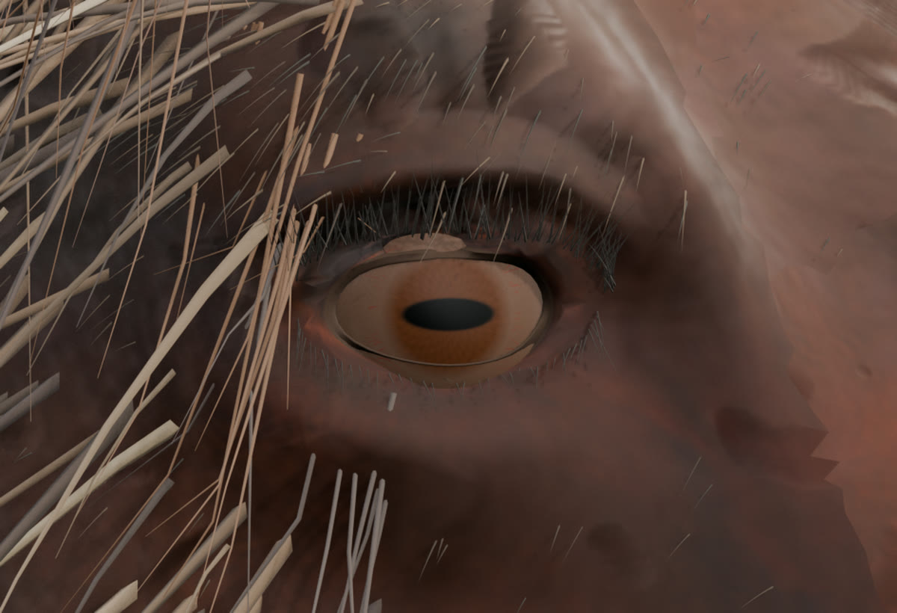
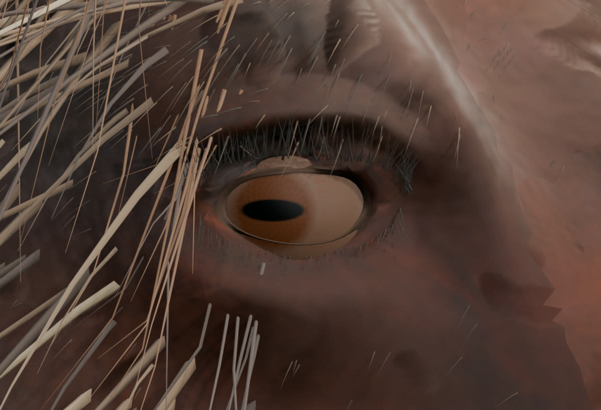
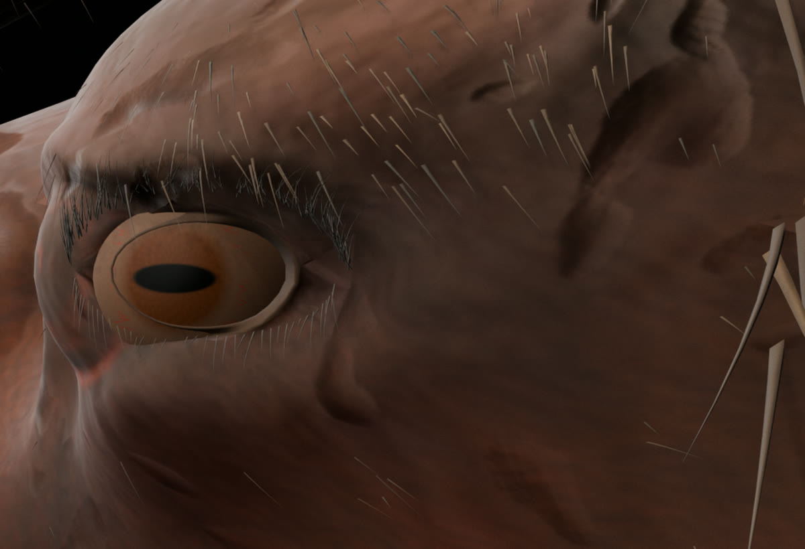
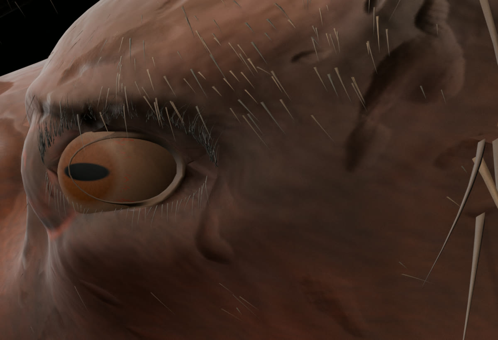

Лось V32W — смягчённые края глазниц
Это следующая версия реальной 3D-модели, не концепт и не генерация картинки. После проверки видео V32U уточнил форму внутренней кромки обоих век, уменьшил её чрезмерное выступание и подразделил полигоны локальной поверхности вокруг глаз. Глазницы остаются замкнутыми, оба глазных яблока сферические и продолжают синхронно вращаться.
ЛЕВЫЙ ГЛАЗПРАВЫЙ ГЛАЗ
ГеометрияЛокальное подразделение век, более плавная и менее выступающая кромка
Топология427 442 вершины, 801 332 грани; новых неманифолдных или открытых рёбер не появилось
Анимация / GLBСохранены 3 клипа, оба канала вращения глаз, игровой GLB успешно проверен
Новые ракурсы из Blender



